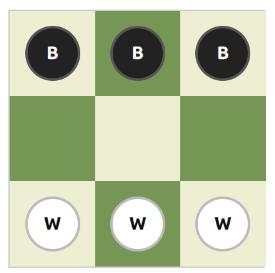

from common.game import Board
b = Board()
b.setStartingPosition()
print(b.toDisplayString())
print("Legal moves for White:", b.generateMoves())BBB
___
WWW
Legal moves for White: [(6, 3), (7, 4), (8, 5)]This notebook walks through the full pipeline: game rules → supervised learning → reinforcement learning (AlphaZero-style MCTS).
Hexapawn invented by Martin Gardner. Is played on a 3×3 board. Each side has three pawns.

Board squares are indexed 0–8 (left-to-right, top-to-bottom):
0 1 2
3 4 5
6 7 8Rules: - Pawns move one square forward (no double-step). - Pawns capture diagonally forward. - White wins by reaching row 0 (squares 0–2). - Black wins by reaching row 2 (squares 6–8). - A player with no legal moves loses.
In [3]:
Encoding: input is a bit vector of size 21 which represents the current postions of the white and black pawns:
The network has two outputs: | Head | Shape | Meaning | |——|——-|———| | Policy | (28,) | Probability over all possible moves | | Value | (1,) | Expected outcome: +1 = White wins, -1 = Black wins |
In [5]:
Input vector (21 values): [0, 0, 0, 0, 0, 0, 1, 1, 1, 1, 1, 1, 0, 0, 0, 0, 0, 0, 1, 1, 1]
White pawn bits: [0, 0, 0, 0, 0, 0, 1, 1, 1]
Black pawn bits: [1, 1, 1, 0, 0, 0, 0, 0, 0]
Turn bits: [1, 1, 1]mnx_generateTrainingData.py solves every reachable position with minimax (depth 30) and records: - positions.npy — network input vectors
- moveprobs.npy — one-hot best move (policy target)
- outcomes.npy — game result (+1 / 0 / -1)
Run once; files are already present if you see *.npy in this directory.
In [3]:
# Run this cell to regenerate the training data (takes a few seconds)
# %run mnx_generateTrainingData.py
# Or just inspect the existing data:
positions = np.load("positions.npy")
moveprobs = np.load("moveprobs.npy")
outcomes = np.load("outcomes.npy")
print("positions shape:", positions.shape) # (N, 21)
print("moveprobs shape:", moveprobs.shape) # (N, 28)
print("outcomes shape: ", outcomes.shape) # (N,)
print("\nFirst outcome (1=White wins, -1=Black wins):", outcomes[0])positions shape: (118, 21)
moveprobs shape: (118, 28)
outcomes shape: (118,)
First outcome (1=White wins, -1=Black wins): -1sup_network.py trains the dual-headed network on the minimax-labeled data.
Architecture: Input(21) → 5× Dense(128, ReLU) → [PolicyHead(28), ValueHead(1)]
In [4]:
2026-04-12 19:21:00.482270: E external/local_xla/xla/stream_executor/cuda/cuda_fft.cc:477] Unable to register cuFFT factory: Attempting to register factory for plugin cuFFT when one has already been registered
WARNING: All log messages before absl::InitializeLog() is called are written to STDERR
E0000 00:00:1776014460.503510 139893 cuda_dnn.cc:8310] Unable to register cuDNN factory: Attempting to register factory for plugin cuDNN when one has already been registered
E0000 00:00:1776014460.509667 139893 cuda_blas.cc:1418] Unable to register cuBLAS factory: Attempting to register factory for plugin cuBLAS when one has already been registered
2026-04-12 19:21:00.533220: I tensorflow/core/platform/cpu_feature_guard.cc:210] This TensorFlow binary is optimized to use available CPU instructions in performance-critical operations.
To enable the following instructions: AVX2 FMA, in other operations, rebuild TensorFlow with the appropriate compiler flags.
2026-04-12 19:21:03.498439: E external/local_xla/xla/stream_executor/cuda/cuda_driver.cc:152] failed call to cuInit: INTERNAL: CUDA error: Failed call to cuInit: CUDA_ERROR_NO_DEVICE: no CUDA-capable device is detectedModel: "functional"
┏━━━━━━━━━━━━━━━━━━━━━┳━━━━━━━━━━━━━━━━━━━┳━━━━━━━━━━━━┳━━━━━━━━━━━━━━━━━━━┓ ┃ Layer (type) ┃ Output Shape ┃ Param # ┃ Connected to ┃ ┡━━━━━━━━━━━━━━━━━━━━━╇━━━━━━━━━━━━━━━━━━━╇━━━━━━━━━━━━╇━━━━━━━━━━━━━━━━━━━┩ │ input_layer │ (None, 21) │ 0 │ - │ │ (InputLayer) │ │ │ │ ├─────────────────────┼───────────────────┼────────────┼───────────────────┤ │ dense (Dense) │ (None, 128) │ 2,816 │ input_layer[0][0] │ ├─────────────────────┼───────────────────┼────────────┼───────────────────┤ │ dense_1 (Dense) │ (None, 128) │ 16,512 │ dense[0][0] │ ├─────────────────────┼───────────────────┼────────────┼───────────────────┤ │ dense_2 (Dense) │ (None, 128) │ 16,512 │ dense_1[0][0] │ ├─────────────────────┼───────────────────┼────────────┼───────────────────┤ │ dense_3 (Dense) │ (None, 128) │ 16,512 │ dense_2[0][0] │ ├─────────────────────┼───────────────────┼────────────┼───────────────────┤ │ dense_4 (Dense) │ (None, 128) │ 16,512 │ dense_3[0][0] │ ├─────────────────────┼───────────────────┼────────────┼───────────────────┤ │ policyHead (Dense) │ (None, 28) │ 3,612 │ dense_4[0][0] │ ├─────────────────────┼───────────────────┼────────────┼───────────────────┤ │ valueHead (Dense) │ (None, 1) │ 129 │ dense_4[0][0] │ └─────────────────────┴───────────────────┴────────────┴───────────────────┘
Total params: 72,607 (283.62 KB)
Trainable params: 72,605 (283.61 KB)
Non-trainable params: 0 (0.00 B)
Optimizer params: 2 (12.00 B)
In [5]:
# Run one inference: policy + value for the starting position
b = Board()
b.setStartingPosition()
inp = np.array([b.toNetworkInput()])
policy, value = model.predict(inp, verbose=0)
print("Value (expected outcome):", value[0][0])
print("\nMove probabilities (legal moves only):")
for move in b.generateMoves():
idx = b.getNetworkOutputIndex(move)
print(f" move {move} → p = {policy[0][idx]:.4f}")Value (expected outcome): -1.0
Move probabilities (legal moves only):
move (6, 3) → p = 0.9995
move (7, 4) → p = 0.0000
move (8, 5) → p = 0.0001rnf_train.py trains from scratch using self-play + MCTS (AlphaZero-style):
Saved checkpoints: model_it0.keras, model_it10.keras.
In [6]:
# Run RL training (~minutes depending on hardware)
# %run rnf_train.py
# Or run a single MCTS search on the starting position to see move probabilities:
from rnf_mcts import Edge, Node, MCTS
np.set_printoptions(precision=3, suppress=True)
rl_model = keras.models.load_model("model_it10.keras")
b = Board()
b.setStartingPosition()
root_edge = Edge(None, None)
root_edge.N = 1
root_node = Node(b, root_edge)
searcher = MCTS(rl_model)
probs = searcher.search(root_node)
print("MCTS move probabilities (move, prob, N, Q):")
for move, prob, n, q in sorted(probs, key=lambda x: -x[1]):
print(f" {move} prob={prob:.3f} N={n} Q={q:.3f}")1/1 ━━━━━━━━━━━━━━━━━━━━ 0s 104ms/step 1/1 ━━━━━━━━━━━━━━━━━━━━ 0s 35ms/step 1/1 ━━━━━━━━━━━━━━━━━━━━ 0s 34ms/step 1/1 ━━━━━━━━━━━━━━━━━━━━ 0s 35ms/step 1/1 ━━━━━━━━━━━━━━━━━━━━ 0s 36ms/step 1/1 ━━━━━━━━━━━━━━━━━━━━ 0s 36ms/step 1/1 ━━━━━━━━━━━━━━━━━━━━ 0s 37ms/step 1/1 ━━━━━━━━━━━━━━━━━━━━ 0s 37ms/step 1/1 ━━━━━━━━━━━━━━━━━━━━ 0s 44ms/step 1/1 ━━━━━━━━━━━━━━━━━━━━ 0s 36ms/step 1/1 ━━━━━━━━━━━━━━━━━━━━ 0s 36ms/step 1/1 ━━━━━━━━━━━━━━━━━━━━ 0s 31ms/step 1/1 ━━━━━━━━━━━━━━━━━━━━ 0s 36ms/step 1/1 ━━━━━━━━━━━━━━━━━━━━ 0s 34ms/step 1/1 ━━━━━━━━━━━━━━━━━━━━ 0s 34ms/step 1/1 ━━━━━━━━━━━━━━━━━━━━ 0s 38ms/step 1/1 ━━━━━━━━━━━━━━━━━━━━ 0s 39ms/step 1/1 ━━━━━━━━━━━━━━━━━━━━ 0s 35ms/step 1/1 ━━━━━━━━━━━━━━━━━━━━ 0s 34ms/step 1/1 ━━━━━━━━━━━━━━━━━━━━ 0s 35ms/step 1/1 ━━━━━━━━━━━━━━━━━━━━ 0s 36ms/step 1/1 ━━━━━━━━━━━━━━━━━━━━ 0s 35ms/step 1/1 ━━━━━━━━━━━━━━━━━━━━ 0s 35ms/step 1/1 ━━━━━━━━━━━━━━━━━━━━ 0s 32ms/step 1/1 ━━━━━━━━━━━━━━━━━━━━ 0s 46ms/step MCTS move probabilities (move, prob, N, Q): (7, 4) prob=0.560 N=56 Q=-0.643 (6, 3) prob=0.220 N=22 Q=-0.636 (8, 5) prob=0.220 N=22 Q=-0.636
Both eval scripts pit the network (as Black) against a random White player over 100 games.
In [7]:
import random
def net_vs_rand(model, n_games=100):
white_wins = black_wins = 0
for _ in range(n_games):
b = Board()
b.setStartingPosition()
# White plays first move randomly to vary openings
b.applyMove(random.choice(b.generateMoves()))
while not b.isTerminal()[0]:
if b.turn == Board.WHITE:
b.applyMove(random.choice(b.generateMoves()))
else:
q = model.predict(np.array([b.toNetworkInput()]), verbose=0)
masked = [0.0] * 28
for m in b.generateMoves():
idx = b.getNetworkOutputIndex(m)
masked[idx] = q[0][0][idx]
best = b.generateMoves()[np.argmax([masked[b.getNetworkOutputIndex(m)] for m in b.generateMoves()])]
b.applyMove(best)
winner = b.isTerminal()[1]
if winner == Board.WHITE: white_wins += 1
if winner == Board.BLACK: black_wins += 1
total = white_wins + black_wins
print(f"White (rand) wins: {white_wins/total:.0%} | Black (net) wins: {black_wins/total:.0%}")
print("Supervised model:")
net_vs_rand(keras.models.load_model("supervised_model.keras"))
print("\nRL model (it10):")
net_vs_rand(keras.models.load_model("model_it10.keras"))Supervised model:
White (rand) wins: 0% | Black (net) wins: 100%
RL model (it10):
White (rand) wins: 0% | Black (net) wins: 100%mnx_generateTrainingData.py → positions.npy / moveprobs.npy / outcomes.npy
↓
sup_network.py → supervised_model.keras
common/init_random_model.py → common/random_model.keras
↓
rnf_train.py (self-play) → model_it0.keras, model_it10.keras| Script | What it produces |
|---|---|
mnx_generateTrainingData.py |
Training labels via minimax |
sup_network.py |
Supervised model |
sup_eval.py |
Win-rate of supervised model vs random |
rnf_train.py |
RL model via self-play + MCTS |
rnf_eval.py |
Win-rate of RL model vs random |
rnf_search_test.py |
One-shot MCTS debug output |